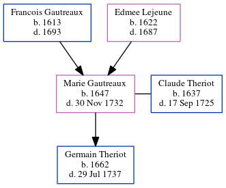

Marie Francoise Theriot (née Gautreaux) 1647 - 1732
[ Home ] | [ Calendar ] | [ Surnames Index ] | [ Census Index ] | [ Family History ]The child of Francois Gautreaux and Edmee Lejeune, Marie Gautreaux, the 9 times great-grandmother of Michele Copp (née Phillips), was born in Port Royal, Acadia, Nova Scotia, Canada in 16471 and married Claude Theriot (with whom she had 1 child, Germain) in Port Royal in 1661, which is also where she died on Nov 30, 1732.
Parents
- Francois was born in 1613
- Edmee was born in 1622
Children
- Germain was born in 1662
Citations
- U.S. and International Marriage Records, 1560-1900 Online publication - Provo, UT, USA: The Generations Network, Inc., 2004.Original data - This unique collection of records was extracted from a variety of sources including family group sheets and electronic databases. Originally, the information was deriv
Family Tree
Generated by ged2site. Last updated on Jun 6, 2024